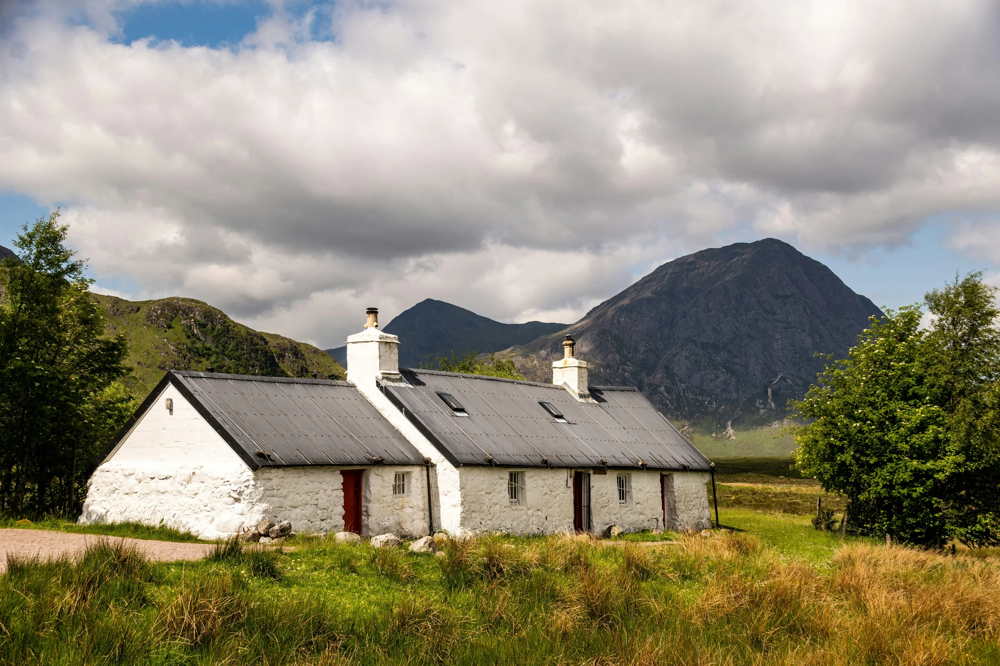
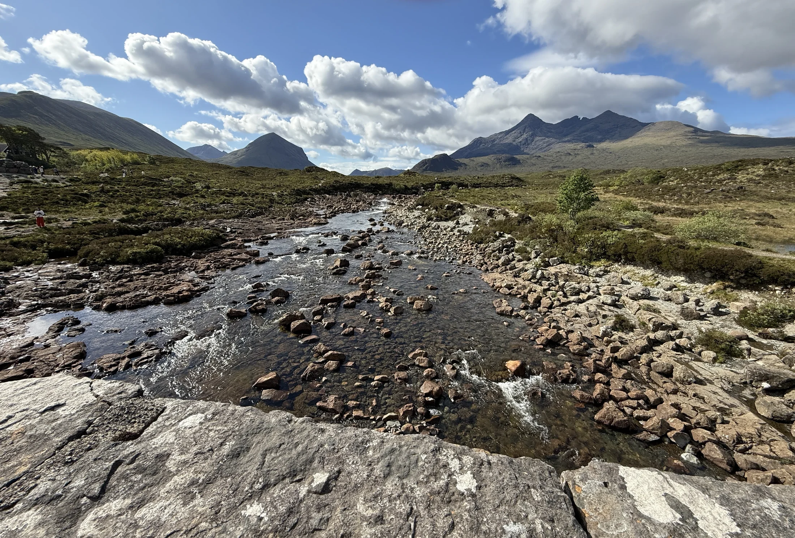
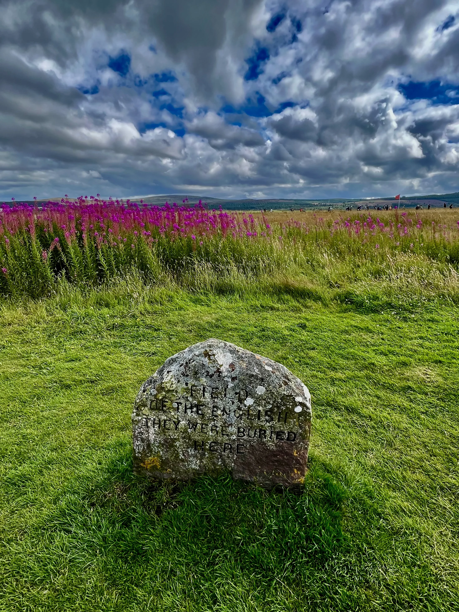
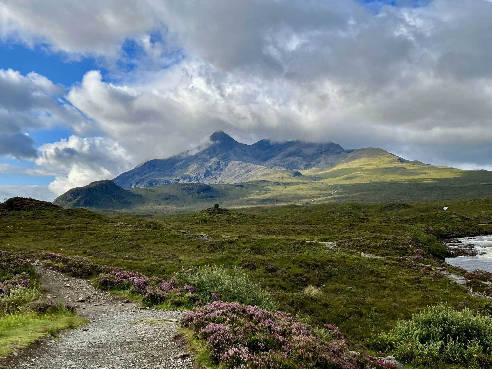
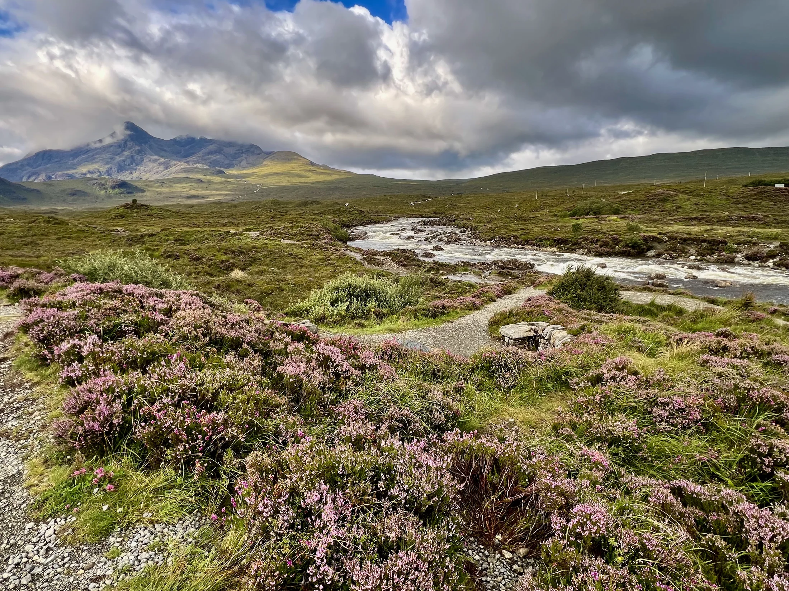

Every trip through the Highlands, somebody eventually asks the question.
Usually somewhere between the lochs, the mountains and the huge empty spaces stretching off into the distance.
“Who owns all this land?”
Sometimes it came when we passed sheep standing alone beneath enormous mountains. Sometimes when someone noticed there were barely any fences. And very often it happened in Glen Coe — right around the little white cottage that once stood beside the A82.
“Who owns that place?”
And honestly, it is a fair question.
Because to most visitors — especially from Australia, New Zealand, Canada or the United States — the Highlands feel like wilderness.
The scale can feel almost unreal.
No suburbs. Very few towns. Mountains disappearing into weather. Long stretches with almost nothing at all.
So naturally, many people assume this must be public land in the same way as the big national parks back home. Something like Banff. Or Yosemite. Or the huge national parks and Crown lands of Canada and Australia.
But Scotland does not really work that way.
And that small cottage beside the road is actually the perfect place to understand why.
The Cottage Beneath The Mountains
The cottage is called Allt-na-Reigh.
For many years, the cottage became part of the mythology of Glen Coe itself — photographed constantly by travellers passing through the valley beneath Buachaille Etive Mòr.
For decades it belonged to Hamish MacInnes — one of the most legendary figures in Scottish mountaineering history. Climber. Inventor. Rescue pioneer. The sort of rugged Highland character that almost feels invented by central casting.
Later, the cottage passed into the ownership of Jimmy Savile, and after the scale of his crimes became public, the house became infamous. For years it sat abandoned and vandalised beneath one of the most beautiful landscapes in Scotland.
But the surprising thing is not really the cottage itself.
It is the fact that it was privately owned at all. Right there. In the middle of one of Scotland’s most iconic landscapes.
And that is usually the moment people realise: Scotland’s relationship with land is very different to what many overseas visitors expect.

The Cards Were Already Dealt
Part of the reason is that countries like Australia, Canada and New Zealand developed during a much more modern administrative era. Governments could survey, map and divide enormous areas of land relatively early on, creating large systems of Crown land, national parks and state-managed wilderness.
Scotland was already old before countries like Australia even existed in their modern form.
By the time modern countries like Australia even existed, Scotland had already spent centuries dividing land between clans, aristocrats, estates, churches and powerful families.
The cards had already been dealt.

And once land ownership patterns become embedded over centuries, they tend to stay embedded.
That is why Scotland still has one of the most concentrated patterns of land ownership in the developed world. Even today, enormous areas of rural Scotland remain in the hands of relatively few owners.
Once you understand that, the Highlands start looking different.
Not emptier.
Older.
Clans, Roads & Control
To understand why, you have to go backwards.
Far backwards.
For centuries, Highland society was organised around clans. But clans were not just family surnames on souvenir tea towels. They were social systems. Military systems. Political systems.
A clan chief controlled territory. He organised protection, settled disputes, collected rents and could raise fighting men when needed — sometimes hundreds of armed men, quickly. Loyalty to the clan often meant more than loyalty to a distant government in London.
And crucially: many Highlanders did not think of themselves as simply renting from a chief in the modern sense. The relationship was older than that. It involved kinship, community and mutual obligation. You belonged to the land and the clan in ways that modern property law does not have a good word for.
The Highlands were difficult to control from outside. That is partly why places like Fort William and Fort Augustus exist at all — garrison towns planted into the landscape to project state power. The military roads running through the region, including the routes through Glen Coe itself, were built so the British government could move troops through the Highlands more effectively after the Jacobite uprisings.
Visitors have literally driven those roads.
The infrastructure of control is still the infrastructure of tourism.
“The infrastructure of control is still the infrastructure of tourism.”
The failed Jacobite Rising of 1745 changed everything.
After Culloden, the British state moved aggressively to dismantle traditional Highland power structures. Gaelic culture was suppressed. Elements of Highland dress, including tartan, were restricted for a time. Weapons were banned. The structures that had held Highland society together for centuries were systematically weakened.
And gradually, many clan chiefs transformed into landlords.
That shift sounds simple.
It was not.
What changed was not just legal status. What changed was how Highland elites thought about land, about their people, and about themselves. Many clan chiefs were increasingly educated in Lowland Scotland or England. They spoke English rather than Gaelic. They were drawn into British aristocratic culture, British social networks, British economic ideas.
Land became something to be managed and improved rather than something you and your people simply were.
The old reciprocal obligations faded. The people who had lived on the land for generations became, under the new logic, tenants.
Or obstacles.

The Highland Clearances
That led to the Highland Clearances.
Across the eighteenth and nineteenth centuries, many landowners forcibly removed communities from inland glens to make way for more profitable sheep farming, and later for sporting estates focused on deer stalking and grouse shooting.
This is the part that often catches people off guard.
The tragedy was not simply that outsiders arrived and took Highland land. Often the people making these decisions were Highland themselves — or descended from the very clan chiefs who had once held obligations to the communities they were now clearing.
That is a much harder thing to hold.
Entire settlements disappeared. People were pushed onto poor coastal strips. Many emigrated.
To Canada. To Australia. To New Zealand. To America.
Which is why this subject resonates so strangely with many of the visitors sitting on the coach.
In a very real sense, many descendants of the people cleared from these landscapes ended up in the countries whose visitors now travel back through the Highlands and ask:
“Who owns all this?”

The Great Highland Contradiction
And yet, despite all of this private ownership, Scotland feels unusually open.
That is the other thing visitors notice immediately. You can hike enormous distances. Climb mountains. Walk through estates. Camp responsibly. Cross land that technically belongs to somebody else. And often, you would never even realise you were walking through privately owned land at all.
That feels strange to many North Americans especially. In parts of the United States, private land often announces itself loudly: fences, gates, warning signs, no trespassing.
In Scotland, ownership can feel almost invisible.
That comes from Scotland’s right-to-roam traditions, later formalised through modern access legislation. Unlike England and Wales, Scotland grants unusually broad public access rights across much private land, provided people act responsibly.
Which creates one of the great contradictions of the Highlands:
The land may be privately owned.
But culturally, access to landscape still matters deeply.

An Ancient Inhabited Landscape
They feel wild.
But not untouched.
This is not empty wilderness.
It is an ancient inhabited landscape.
Every glen has layers underneath it: clan histories, military roads, ruined settlements, estate boundaries, old droving routes, sheep grazing, mountaineering stories, conservation debates and tourism.
Even that small white cottage beside the road in Glen Coe carries multiple Scotlands inside it.
The old mountaineering Highlands. Modern celebrity scandal. Private ownership. Public fascination.
It is a landscape where tourism, ownership, memory and history all sit on top of each other.
And the strange reality that one of the most iconic landscapes in Europe is still shaped by decisions made centuries ago.
“Who owns that?”
← Back to From The Road